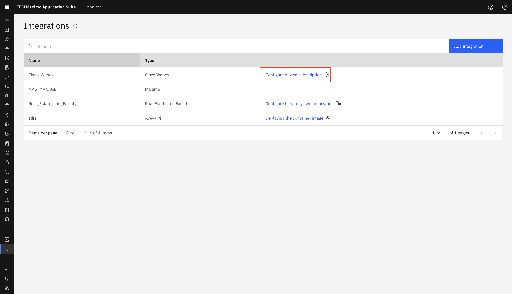
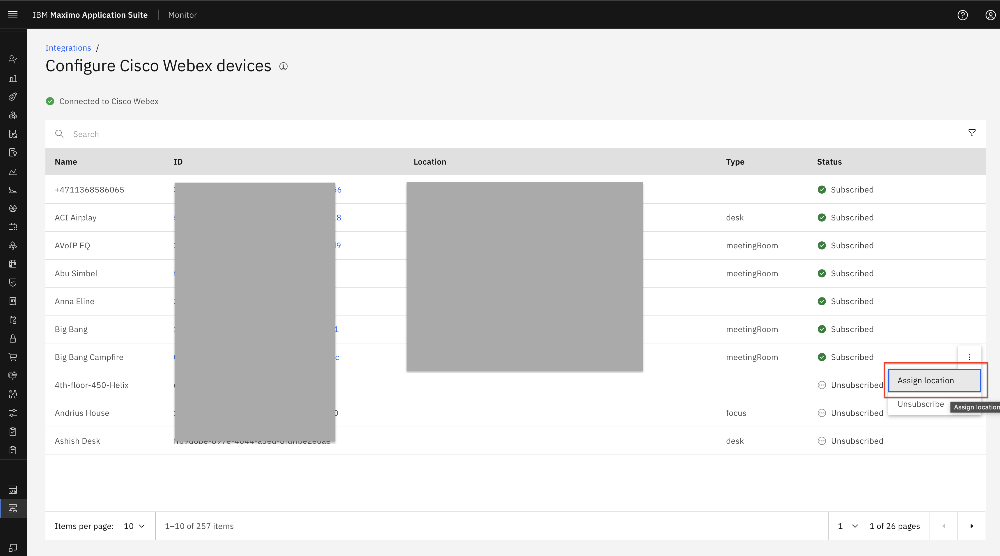
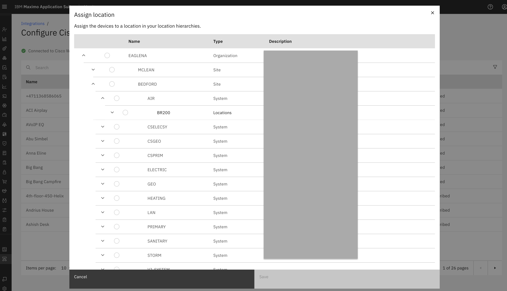
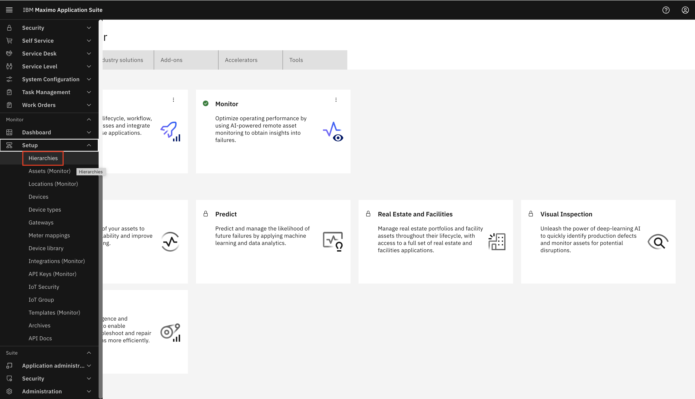
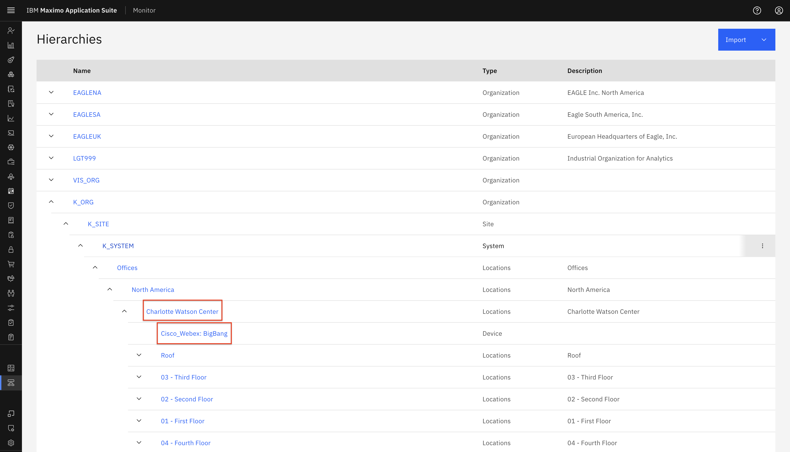
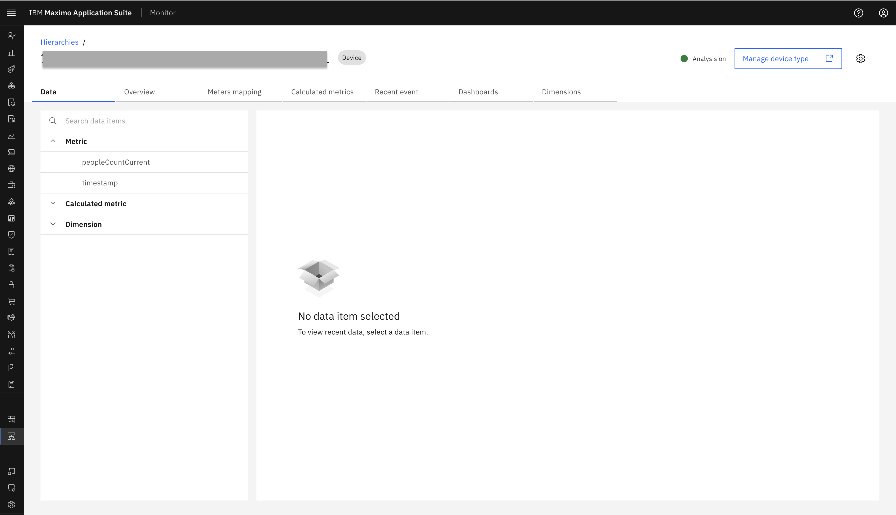
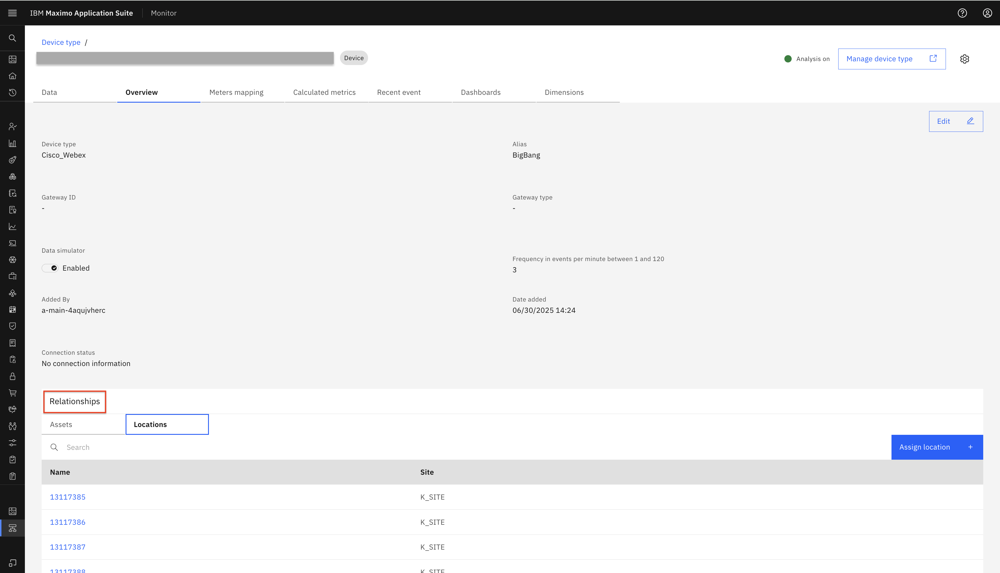
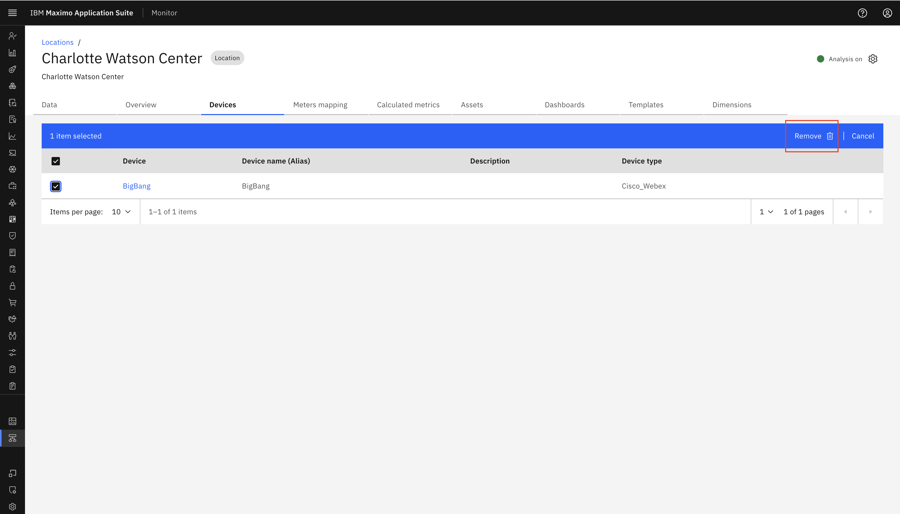
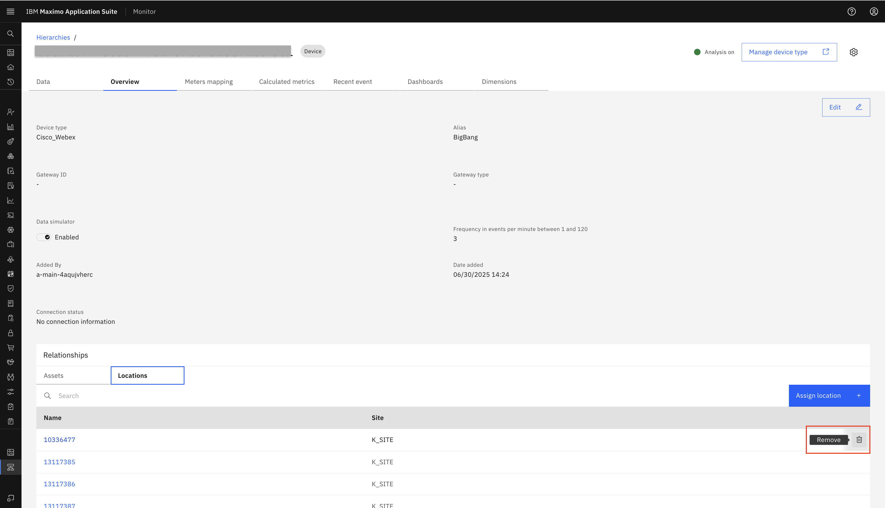

Objectives
In this Exercise you will learn how to add and remove locations in Cisco Webex devices.
Before you begin:
This Exercise requires that you have:
- completed the pre-requisites required for all labs
- completed the previous exercises
Assign Location to Cisco Webex device
Please again go to Cisco Webex integration page. Click on Configure device subscription.

It will show all available devices and subscribed devices. From there, we get an option Assign location in the ellipses icon to assign the Cisco Webex device to a location.

On click Assign location, we get a pop-up to assign device to a location in the Real Estate and Facilities location hierarchies:

After we assign a Webex device to a location. We can view that in Monitor Hierarchies as well as in the Devices section of that particular location.
Expand Setup under the Monitor setup section in the left menu and select Hierarchies:

In Hierarchies, we can check Location in below manner.
Organisation -> Site -> System -> Location.
Under Location where we have assigned Cisco Webex device, that specific device will be incorporated.

View Location in Cisco Webex device
To check Location under Device, we need to click that device under Hierarchies. It will redirct to device page in Monitor. Select Cisco_Webex: BigBang device which we check above steps. It will open device page.

Here go to Overview tab, under Relationship section we can see all assign location.

View Cisco Webex device in Location
We can even see Device under Location also. For it again we need to go to Hierarchies select location Charlotte Watson Center:
It will redirct to Location page in Monitor.

Now we need to go Devices tab under it. It will show all assigned devices.

Unassign Location to Cisco Webex device
We can remove device from location. For it we need to select checkbox of assign device in Location Device tab. Click on remove button. It will unassign device from that location and vice versa:

Same way we can remove Location from Device also. In Device there is one Overview tab. Under overview there is one Relationship section which contains Asset and Location details for that device. We can unassign location by clicking remove from there.

Congratulations you have successfully add and remove location in Cisco Webex device to your Cisco Webex integration.